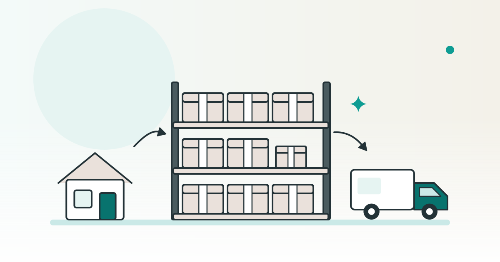

SHOPKIT コラム
ネットショップの発送代行とは個人で使う目安と費用の考え方

荷物の準備に追われるときは、発送のどの部分を外へ頼みたいかを分けて考えましょう。使い始める目安は、自分の件数と手間の記録、依頼する条件をそろえて検討します。費用の見方と、住所情報や同封物、注文の照合で決めておく内容を整理します。
この記事は、完成品のネットショップを販売している SHOPKIT が書いています。
発送代行は、保管・梱包・発送のどこを頼むかを確かめる
ネットショップの発送業務を外へ頼む際は、商品を預けること、注文した商品を取り出すこと、梱包して送り出すことを分けて書き出します。候補のサービスに、それぞれをどこまで受け持つか聞いてください。発送代行という名前だけで、必要な作業がすべて含まれると決めないようにします。
商品が届いたときに何を照らすか、保管中に色やサイズをどう区別するか、注文後にどの情報で送り出すかを尋ねましょう。商品の性質や梱包の指定も示して、引き受けられる範囲と、対象外の作業を回答で残します。
自分の側では、商品の仕様、発送してよい注文、送り先や同封内容を指定する担当を決めます。変更や取消しをどの時点まで伝えられるかも確認してください。店としての判断と、依頼する作業の境目を整理してから比較します。
自分で送るか任せるかは、件数と手間で考える
まず、日ごとの発送件数と、荷物が集中した日を記録してみましょう。商品を取り出す、梱包する、送り先を照らす、連絡するなど、何に手間がかかったかを書き添えます。件数を調べていない日は、発送がなかったという記録と区別してください。
判断には、平均の件数だけでなく、集中した日に対応できたか、保管場所が足りるか、壊れやすい物や組み合わせのある注文を扱えるかも使います。自分が不在の日や、発送と問い合わせの返答が重なる場面についても、どこを頼むと助かるかを考えましょう。
外へ頼む場合に自分が行うことも、同じ表へ加えます。商品を預ける準備、注文の指定、変更の連絡、報告の確認などです。減らしたい作業と、依頼後も自分が続ける確認を並べて検討してください。
使い始める件数の共通の目安は、この記事では置きません。記録をもとに候補先へ対応範囲と見積もりを問い合わせ、自分で続ける場合と比べましょう。店全体の仕事の整理は、関連の記事へ進めます。
関連：ネットショップを一人で運営するには｜毎日の作業と、続けるための決めごと
費用は、保管・発送ごとの作業・送料に分けて見る
見積もりを比べる際は、同じ商品と注文の内容、預ける範囲を示します。この記事では、保管、発送ごとの作業、送料を比較の欄に分け、何が含まれ、どこが別の請求になるかを確認する方法を提案します。
| 比較する欄 | 計算の基準を聞く | 含む・含まないを聞く |
|---|---|---|
| 保管 | 使う場所や量、期間をどのように数えるか | 受け取り時の作業、長く預ける場合の扱い |
| 発送ごとの作業 | 注文、商品、荷物のどれを単位にするか | 取り出し、梱包、資材、納品書や同封物の作業 |
| 送料 | 梱包後の大きさ、重さ、送り先でどう変わるか | 別の作業費や追加の負担が含まれているか |
開始するときの準備、最低の請求額、返送や取消し、終了時に商品を戻す作業も、見積もりの対象かを尋ねましょう。注文が増える場合と少ない場合について、計算の変わる条件を聞いておきます。空欄を、費用がかからないという意味で埋めないようにしてください。
比べるときは、計算基準、作業の範囲、別請求、支払先、請求が確定する時点を残します。候補ごとに違う条件の合計だけを比べず、同じ内容を頼んだ見積もりかを照らしましょう。お客様へ案内する送料の決め方は、関連の記事で扱っています。
関連：ネットショップの送料の決め方｜発送方法・梱包と先に伝えること
お客様の住所を渡すときの決まり
個人情報保護委員会のガイドラインの通則編は、個人データの取扱いを委託する場合の監督について、委託先を選ぶ際の確認、契約、取扱状況の把握などを説明しています。頼む仕事に不要な個人データは提供しないという考え方も示されています。
発送を頼む際は、住所や氏名、連絡先など、相手へ渡す情報の欄を先に書き出しましょう。発送と関係のない問い合わせの内容や購入履歴まで渡す設定になっていないかを見ます。渡す項目と、相手が何のために使うかを対応させてください。
相手に聞く内容は、情報を見る人、受け渡す方法、保管や削除の方法、問題に気づいたときの連絡先です。別の相手へ作業を頼む場合の扱いも確認しましょう。契約時の回答だけでなく、その後の取扱状況をどう確かめるかまで決めておきます。
実際の受け渡しがどのような取扱いに当たるか、お客様への案内をどう整えるかは、委託内容と店の情報の流れをそろえて窓口で確認してください。個人情報の扱い全般は、関連の記事へ進めます。
関連：ネットショップのお客様の個人情報｜守ることとプライバシーポリシーに書くこと
納品書や同封物の扱いを決める
同封したい物は、納品書、商品の取り扱い案内、店の案内などに分けて一覧にします。どの注文へ何を入れるか、入れない条件、用意する担当を決めましょう。印刷や封入を頼む場合は、指定する版と見本、追加作業としての扱いを確認します。
総務省の信書のガイドラインは、納品書や領収書などを信書に当たる文書の例として挙げています。
書類を荷物へ同封できるかは、文面と荷物との関係、同封の仕方、使う発送方法を示して確認してください。書類の名前だけで、一律に送れる・送れないと判断しないようにします。実際に入れる物の見本を用意して、総務省の案内や発送を受け持つ窓口で扱いを確かめましょう。
納品書などに表示する氏名や注文情報、金額の扱いも、店の案内と照らします。贈り物の注文や、通常と違う同封内容を指定する場合は、どの情報で見分け、誰が確認するかを決めておきましょう。
任せる前に、在庫と注文の記録の合わせ方を決める
自分の商品一覧と、預け先が管理する商品を照らすために、品番、色、サイズなどの呼び名を対応させます。注文番号と送り出した荷物の記録を、どこで照合できるかも確認しましょう。管理画面や表の名前が同じでも、同じ状態を表しているかを確かめてください。
記録の状態は、店から発送を頼んだ時点、相手が受け付けた時点、実際に送り出した時点を分けて聞きます。注文を送った記録だけで、発送済みと扱わないためです。変更や取消しがあったときに、どちらの記録へ反映したかを確認できる形にします。
在庫が合わない、送り先の変更が間に合わないなど、通常と違うことが起きた際の連絡先も決めておきます。自分が判断することと、相手が報告することを整理し、依頼した内容と返ってきた結果を照らしましょう。まずは自店の商品の呼び名と、注文の状態を説明できる資料を用意して相談します。
よくある質問
発送代行は、何件くらいから頼めばよいですか？
共通の件数の目安は置いていません。日ごとの件数や集中する日、保管場所、減らしたい手間を記録し、依頼後に自分が行う確認も加えて比べましょう。
発送代行の費用は、どう比べればよいですか？
同じ商品や注文の内容を示し、保管、発送ごとの作業、送料の計算基準と対象範囲を確認しましょう。開始・返送・終了などの扱いも質問しておきます。
発送代行に頼むとき、納品書も荷物に入れられますか？
文面と荷物との関係、同封の仕方、発送方法を示して窓口で確かめてください。書類の名前だけで、一律に判断しないようにします。
※ この記事のSHOPKITに関する当事者表示は、2026年10月15日時点のサービスページによります。個人情報保護委員会と総務省の公的資料は、2026年10月27日に確認しました。最新の個人情報・書類の取扱いは、公的な案内と担当窓口でご確認ください。